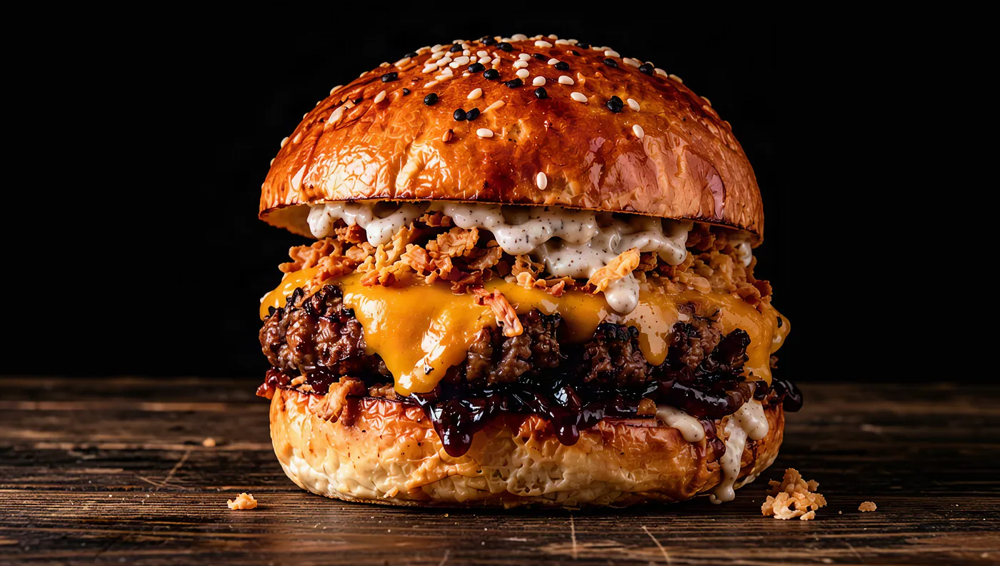
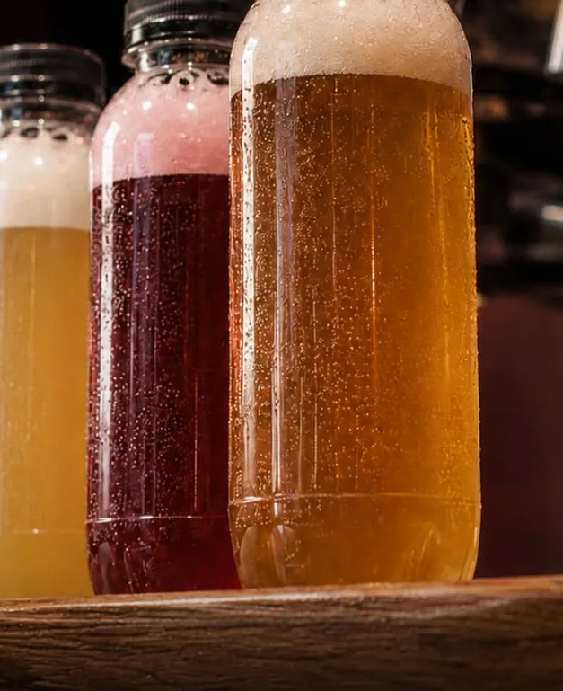

Új
Golden Truffle
4 590 FtCheddar, lilahagymalekvár, pirított hagyma, szarvasgombás majonéz

A ház új kedvence
Szarvasgomba, édes lilahagymalekvár, ropogós pirított hagyma és olvadt cheddar. A Henry's legújabb burgere, és egyben a legelegánsabb.
Csapolt sörök
Horizont, Szent András, First Craft Beer és a klasszikusok: cseh pilsner, müncheni lager, búza.
Nem tudsz dönteni?
4 × 1 dl kóstoló 2 490 Ft
Pilsner · Bohemia Regent
Klasszikus pilsner egyenesen Csehországból.
Lager · Augustiner-Bräu München
Különösen lágy, pezsgő, hosszan érlelt, frissítő sör Németországból.
Lager · Horizont Sörfőzde
Klasszikus német lager, amit amerikai komlók friss lendülete tesz különlegessé.
Gyümölcsös · Szent András Sörfőzde
Valódi gyümölcsből készült meggyes sör: fanyar meggy és édeskés maláta egyensúlya.
Pastry ale · Szent András Sörfőzde
A világhírű osztrák almásrétes ihlette pastry ale.
Gyümölcsös · Horizont Sörfőzde
Málnabomba: frissítő fanyarság és incselkedő gyümölcsösség egy pohárban.
New England IPA · Horizont Sörfőzde
Selymes kortyérzet, bőségesen hidegkomlózva Galaxy, Citra és Mosaic komlóval.
Sour ale · First Craft Beer
Savanykás desszertsör fagyiporral és valódi eper-, meggy- és feketeribizli-pürével.
IPA · Horizont Sörfőzde
Kesernyés IPA trópusi citrusokkal, amit a kekszes malátásság egyensúlyoz.
Mexikói lager · Horizont Sörfőzde
Kukoricapehely, egy leheletnyi só és limehéj-olaj teszi igazán frissé.
APA · First Craft Beer
Kellemesen komlókeserű, trópusias, citrusos APA.
Búza · Primator
Szűretlen búzasör sűrű habbal: banán, szegfűszeg és enyhe nektarin.
Gyümölcsös búza · Szent András Sörfőzde
Német stílusú búzasör tejsavas fanyarsággal és zamatos eperrel.
Kávés stout · Horizont Sörfőzde
Egyedi pörkölésű kávétól markáns, zabpehelytől krémes, selymes stout.
Blend · Horizont × Szent András
A Szent András meggyes sörének és a Horizont Morning Joe-jának keveréke.

Bármelyik csapolt sörünket kérheted 0,5 vagy 1 literes palackban. Házhozszállításra is.
A mi sztorink
A Várkerület 83. alatt korábban a Puskás söröző fogadta a vendégeket. Ezt a hangulatot szándékosan megtartottuk: nem akartunk egy újabb egyforma franchise-helyet, csak egy új étlapot a régi falak közé. 2026 márciusában nyitottunk.
A soproni Henry's-t az Imris család, Imris László és Imris Máté viszi. A nyitóhétvégén 900 burger fogyott, és azóta is rendszeresen tele a ház.
Helyszín és nyitvatartás
| Hétfő–Csütörtök | 11:30–22:30 |
| Péntek–Szombat | 11:30–23:30 |
| Vasárnap | 11:30–21:30 |
Kapcsolat
Asztalfoglalás Facebookon és Instagramon, ott gyorsan válaszolunk.
E-mail: henryssopron@gmail.com